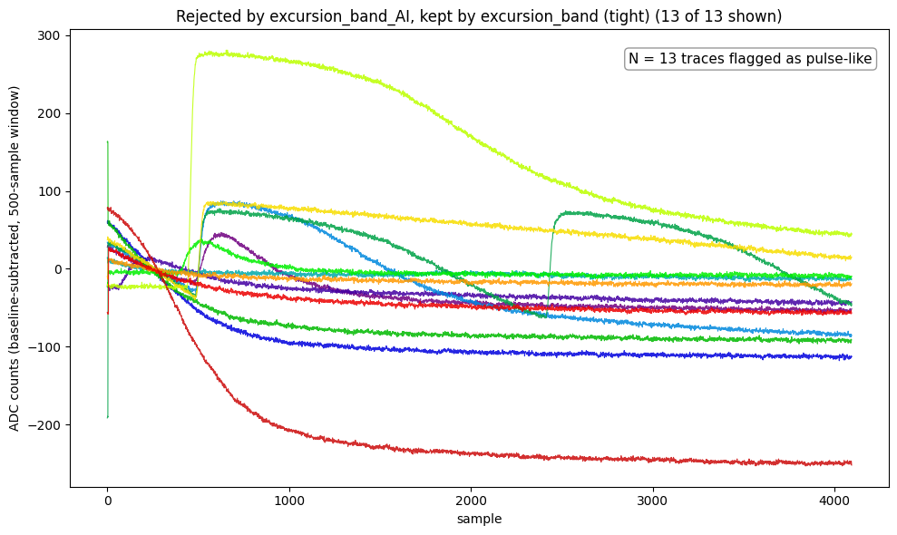
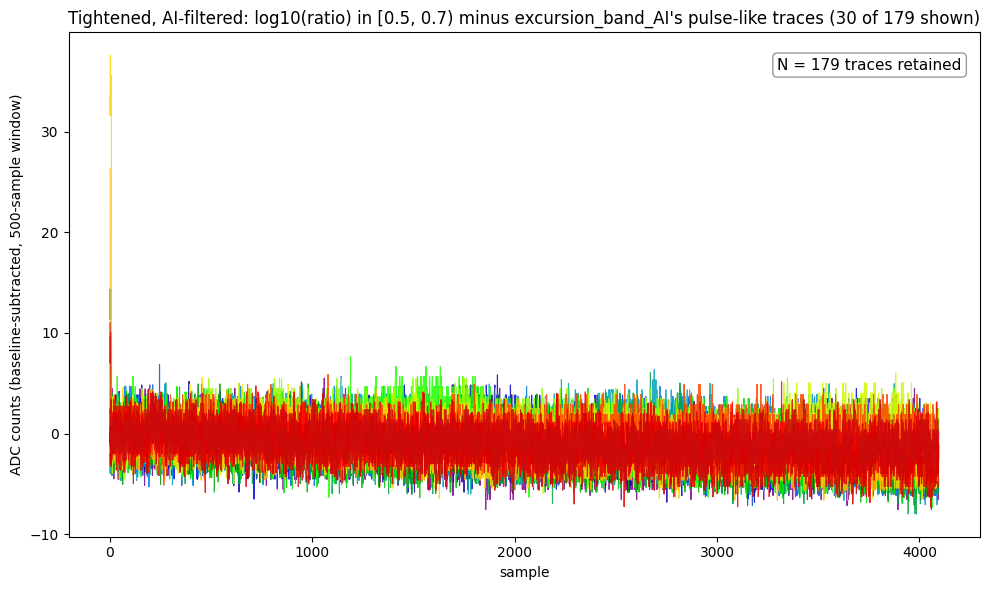
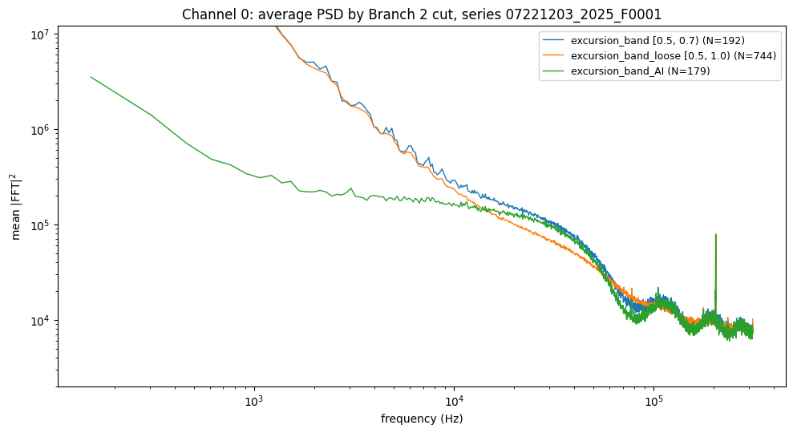

07221203_2025_dump1_noise.ipynb — the “Tight, AI-filtered”, “What the AI filter removes” and “Archive” sections at the end. Pinned to 8b0ab40.good_pulses_overlay.ipynb — the three-cut PSD comparison. Pinned to 850500f.python/pulse_cuts.py and pulse_quantities.py — excursion_band_AI, looks_like_pulse, excursion_duration. Pinned to c3d6754.python/pulse_archive.py and archives/ — the HDF5 archive. Pinned to 894ef9d and 085aa3d.The Tight noise cut of Note 2 (log10(ratio) in [0.5, 0.7), 500-sample window) keeps 192 of 1517 traces and is the cleanest slice found, but a few real pulses still get through. excursion_band_AI is the same cut with a second criterion added: remove whatever looks like a real pulse. The name is literal: the pulse judgment is a heuristic worked out with an AI assistant, not a validated physical criterion, and the cut is tagged under_development.
A real pulse rises and then decays slowly, so it stays near its own peak for a long time. Noise does not. The quantity excursion_duration is the longest run of consecutive post-pretrigger samples whose deviation is at least half of the trace’s own dev. looks_like_pulse flags a trace when that run is at least min_duration samples.
The first attempt counted the total number of samples above half of dev. On real data it flagged all 192 traces of the Tight cut as pulses. With ~2500 post-pretrigger samples and dev only 3–5 times the noise standard deviation, half of dev is just 1.5–2.5 sigma, which ordinary Gaussian noise exceeds in a few percent of samples. Requiring the samples to be consecutive removes that effect, since the chance of a long unbroken run in noise falls off geometrically.
min_durationWith the consecutive-run definition, the 192 traces of the Tight cut split cleanly (Detector 0 / Channel 0, dump 1, 500-sample window):
The default min_duration = 50 sits inside that gap. It was picked by eye from this one dataset, so it may need a different value elsewhere.
excursion_band_AI keeps 179 of the 192 traces. All 13 rejected traces are visually unambiguous real pulses or slow drifts:

excursion_band but rejected by excursion_band_AI: pulses (rising near samples 450–600 and 2400) and slow monotonic drifts.The 179 kept traces are flat noise (30 shown; the spike at sample 0 is the known leading glitch):

excursion_band_AI: 179 of 1517 traces.Because slow drifts also stay near their peak for a long time, the same criterion rejects drifting baselines, not only pulses. That is desirable for a noise selection, and relevant to Note 5, where drift is the problem.
The clearest practical check is the average PSD of each selection (Detector 0 / Channel 0, dump 1). Below ~2 kHz, excursion_band and excursion_band_loose lie well above excursion_band_AI, because a pulse’s rise and decay is low-frequency dominated and a few of them are enough to raise a mean spectrum:
| Frequency | tight / AI | loose / AI |
|---|---|---|
| 150 Hz | 164 | 165 |
| 1 kHz | 64 | 61 |
| 2 kHz | 23 | 20 |
| 5 kHz | 4.3 | 4.0 |
| 10 kHz | 1.8 | 1.4 |
| 30 kHz | 1.1 | 0.7 |
Ratio of the mean |FFT|2 of each selection to that of excursion_band_AI at that frequency (nearest bin).

The PSD is therefore an independent check of the pulse criterion, on top of the visual one. It is not a proof: the same data were used to choose min_duration.
Since the AI selection is the one to build on, its detector_ids are stored in an HDF5 file, archives/good_noise.h5, written and read through python/pulse_archive.py. Layout: one group per (series, detector, channel) at /<series>/detector<N>/channel<C>, containing a detector_ids dataset plus attributes recording how the selection was made: cut name and parameters, the cut’s status (under_development here), the PulseConfig values, dump, source notebook, counts kept and total, and a UTC timestamp.
07221203_2025, detector 0, channel 0: 179 events out of 1517, from excursion_band_AI.save_good_events, load_good_events, list_archive) are cut-agnostic; a future non-noise archive would get its own file rather than a group in this one.looks_like_pulse and its threshold on other channels, detectors and dumps before relying on it; it was tuned on one dataset.under_development and will change if the cut does.